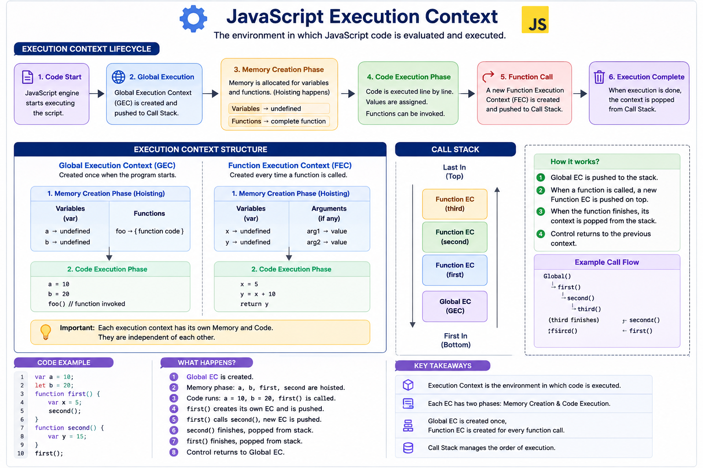

JavaScript Scope & Execution
How the JavaScript engine decides what a variable refers to, and how it runs your code line by line — scope, the call stack, and hoisting explained.
A variable declared outside of any function or block lives in the global scope. It's accessible from anywhere in the file — including inside every function and block.
let siteName = "MyApp"; // global scope
function greet() {
console.log(siteName); // ✅ accessible here
}
greet(); // "MyApp"
console.log(siteName); // ✅ accessible here tooWatch Out
var declarations and functions attach to the window object. Too many globals increase the risk of naming collisions across scripts — this is called global namespace pollution.Best Practice
Every function creates its own scope. Variables declared with var, let, or const inside a function are not visible outside it.
function calculateTotal() {
var total = 100; // function-scoped
console.log(total); // 100
}
calculateTotal();
console.log(total); // ❌ ReferenceError: total is not definedNote
var is only function-scoped, not block-scoped. A var declared inside an if block still leaks out to the whole enclosing function.Q: Do nested functions get their own scope?
let and const are scoped to the nearest enclosing curly braces — an if block, a for loop, or any standalone {}. var ignores blocks entirely.
if (true) {
let message = "Hi";
var leak = "I escape";
}
console.log(leak); // "I escape" — var ignores the block
console.log(message); // ❌ ReferenceError — let respects the block| Keyword | Respects Block Scope? |
|---|---|
var | No — function-scoped only |
let | Yes |
const | Yes |
Remember
for (let i = 0; ...) gives each iteration its own i, which is why let in loops fixed a common closure bug that var used to cause.JavaScript uses lexical (static) scoping — a function's access to variables is determined by where it's physically written in the code, not by where or how it's called.
function outer() {
const secret = "42";
function inner() {
console.log(secret); // ✅ inner "remembers" outer's scope
}
inner();
}
outer(); // "42"Note
Tip
When code references a variable, the engine checks the current scope first, then walks outward through each enclosing scope until it finds the variable — or reaches the global scope and throws a ReferenceError.
const city = "Delhi";
function a() {
const name = "Sam";
function b() {
const age = 25;
console.log(name, city); // walks up the chain to find both
}
b();
}
a();| Scope Checked | Contains | Found? |
|---|---|---|
| Function b | age | No — keep looking outward |
| Function a | name | No — keep looking outward |
| Global | city | Yes ✅ |
Watch Out
An execution context is the environment created every time code runs — it holds variables, function declarations, and the value of this. There are three kinds.

| Type | When It's Created |
|---|---|
| Global Execution Context | Once, when the script first runs. Sets up the global object and this. |
| Function Execution Context | Fresh, every time any function is called — each call gets its own. |
| Eval Execution Context | When code runs inside eval(). Rarely used in modern code. |
Two Phases of Every Execution Context
| Phase | What Happens |
|---|---|
| 1. Creation Phase | Sets up scope, hoists variables/functions, determines this |
| 2. Execution Phase | Runs the code line by line, assigning real values |
Note
The call stack is a LIFO (last-in, first-out) structure that tracks execution contexts. Every function call pushes a new context on top; every function return pops it off.
function first() {
second();
console.log("first done");
}
function second() {
third();
console.log("second done");
}
function third() {
console.log("third done");
}
first();
// Push first → push second → push third
// Pop third (logs "third done")
// Pop second (logs "second done")
// Pop first (logs "first done")Watch Out
RangeError: Maximum call stack size exceeded.Tip
Each frame on the stack carries its own scope, this, and a return address. Understanding this matters most when things break — overflow errors, stack traces, and async code that only looks like it stays on the stack.
1. A Stack Trace Is a Frozen Snapshot of Frames
function a() { b(); }
function b() { c(); }
function c() { throw new Error("boom"); }
a();
// Error: boom
// at c (file.js:3)
// at b (file.js:2)
// at a (file.js:1)2. V8 Has No Tail-Call Optimization
function recurse(n) {
return recurse(n + 1);
}
recurse(0);
// RangeError: Maximum call stack size exceededfunction trampoline(fn) {
let result = fn();
while (typeof result === "function") {
result = result();
}
return result;
}
function recurse(n) {
if (n > 100000) return n;
return () => recurse(n + 1); // return a thunk, don't call directly
}
trampoline(() => recurse(0)); // never grows the real stack3. Async Callbacks Don't Stay on the Call Stack
console.log("1");
setTimeout(() => console.log("2"), 0);
Promise.resolve().then(() => console.log("3"));
console.log("4");
// Output: 1, 4, 3, 2setTimeout callbacks queue as macrotasks; .then() callbacks queue as microtasks. The event loop only pulls from these queues once the call stack is empty, and always drains the full microtask queue before the next macrotask — that's why "3" beats "2" even with a 0ms delay.4. async/await Is Sugar Over the Same Mechanism
async function foo() {
console.log("start");
await null; // yields — schedules the rest as a microtask
console.log("end"); // NOT on the original call stack anymore
}
console.log("before");
foo();
console.log("after");
// Output: before, start, after, end5. Stack vs. Heap for Closures
function counter() {
let count = 0; // lives in counter's execution context
return () => ++count; // closure keeps it alive after counter() returns
}
const c = counter();
c(); c(); console.log(c()); // 3counter's frame pops off the stack immediately after it returns, but count survives on the heap because the returned closure still references it.During the creation phase of an execution context, the engine scans the code and registers variable and function declarations in memory ahead of time. This behavior is called hoisting.

console.log(a); // undefined — hoisted, not yet assigned
var a = 5;
sayHi(); // "Hi!" — function declarations hoist fully
function sayHi() {
console.log("Hi!");
}
sayBye(); // ❌ TypeError: sayBye is not a function
var sayBye = function() {
console.log("Bye!");
};| Declaration Type | What Gets Hoisted |
|---|---|
var | Declaration only, initialized as undefined |
let / const | Declaration only, stays uninitialized (TDZ) |
| Function declaration | Entire function, fully usable before its line |
| Function expression / arrow fn | Only the variable it's assigned to, not the function body |
Remember
V8 parses an entire function or scope before executing a single line. That first pass registers every declaration — this is hoisting. What differs case to case is how much gets registered and what value it starts with.
1. Function Expressions Only Hoist the Variable, Not the Value
sayBye(); // TypeError: sayBye is not a function
var sayBye = function () { console.log("bye"); };
sayHey(); // ReferenceError (TDZ, since it's const)
const sayHey = () => console.log("hey");2. Classes Hoist Into the TDZ — Even Named Declarations
new Foo(); // ReferenceError: Cannot access 'Foo' before initialization
class Foo {}3. Named Function Expressions — the Name Leaks Nowhere
const factorial = function fact(n) {
return n <= 1 ? 1 : n * fact(n - 1); // fact visible here
};
factorial(5); // 120
console.log(typeof fact); // "undefined" — fact never leaked outside4. Duplicate var Declarations Collapse Into One Binding
function demo() {
console.log(x); // undefined
var x = 1;
var x = 2; // no error, just reassignment
console.log(x); // 2
}
demo();5. The Classic Loop-Closure Bug
for (var i = 0; i < 3; i++) {
setTimeout(() => console.log(i), 0);
}
// 3, 3, 3 — var i is one shared function-scoped variable
for (let j = 0; j < 3; j++) {
setTimeout(() => console.log(j), 0);
}
// 0, 1, 2 — let creates a NEW binding per iterationvar's function-scoping colliding with closures capturing a shared reference.6. Function Declarations Inside Blocks — a Gray Area
if (true) {
function greet() { console.log("A"); }
} else {
function greet() { console.log("B"); }
}
greet();let/const instead of declaring functions inside blocks.let and const are hoisted, but unlike var they are not initialized to undefined. The span between entering a scope and the actual declaration line is the temporal dead zone — accessing the variable there throws an error.
{
console.log(score); // ❌ ReferenceError: Cannot access 'score' before initialization
let score = 90;
}| Step | State of "score" |
|---|---|
| Block starts | TDZ begins — accessing it throws |
let score = 90; runs | TDZ ends — "score" is now usable |
Q: Why does the TDZ exist if it just causes errors?
undefined (like var does) can hide a mistake; throwing immediately makes "used before declared" impossible to miss.Watch Out
typeof is normally safe on undeclared variables, but inside the TDZ it still throws — typeof score before let score is declared throws the same ReferenceError.const/let, not var · Know your 8 data types and check with typeof · Primitives copy by value, objects copy by reference · Every function call pushes a new execution context onto the call stack · var hoists as undefined; let/const hoist into the TDZ and throw if touched early.